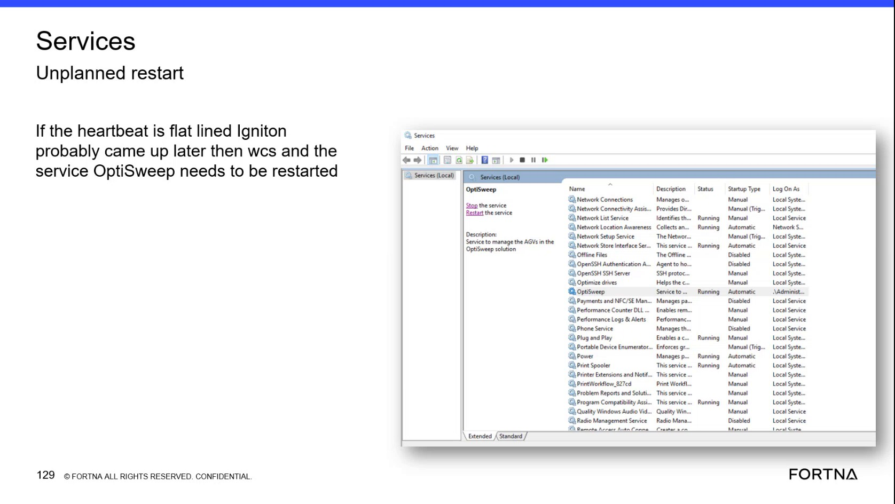

| Procedure ID | proc_restart_optisweep_windows_service_v1 |
|---|---|
| Title | Restart the OptiSweep Windows Service in Windows Services |
| Procedure Type | recovery |
| Primary Role | L1_support |
| Support Safe | Yes |
| Capability Tags | wcs_service_health, windows_service_or_event_log |
| Access Surface | event_viewer |
| Audience Roles | L1_support |
| Failure Pattern Tags | service_crash_or_restart |
| Validation Status | needs_sme_review |
| Merge Status | source_finalized |
Use the Windows Event Viewer / services surface, specifically Windows Services MMC, to locate the OptiSweep service, restart it, and verify that its Status is Running and Startup Type remains Automatic.
Use Windows Services when a tipper heartbeat is flatlined and the source-associated condition is delayed OptiSweep startup relative to Ignition and WCS.

Responsible role: L1_support
Instruction:
In the Windows Event Viewer / services surface, open Windows Services MMC and locate the service named OptiSweep.
Expected result:
The OptiSweep service entry is visible with its service controls and Status and Startup Type fields.
Stop or Escalate If:
Responsible role: L1_support
Instruction:
In Windows Services MMC, select the OptiSweep entry and inspect the displayed Status and Startup Type values.
Expected result:
The OptiSweep entry displays Status as Running and Startup Type as Automatic when the service is in the expected state.
Stop or Escalate If:
Responsible role: L1_support
Instruction:
In Windows Services MMC, use the service control labeled Restart the service for the OptiSweep entry.
Expected result:
The Windows Services console initiates the restart of the OptiSweep service.
Stop or Escalate If:
Responsible role: L1_support
Instruction:
Refresh or recheck the OptiSweep entry in Windows Services MMC after the restart and inspect its Status and Startup Type.
Expected result:
The refreshed OptiSweep entry displays Status as Running and Startup Type as Automatic.
Stop or Escalate If: